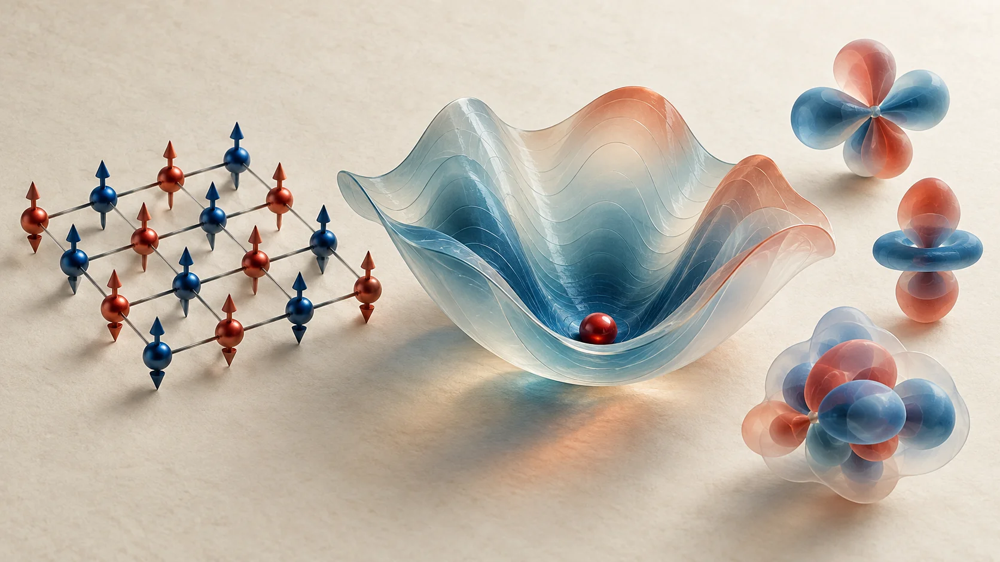
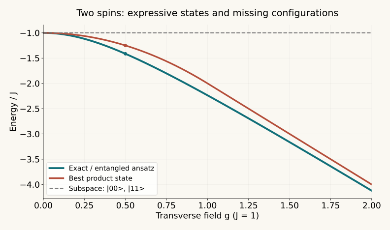
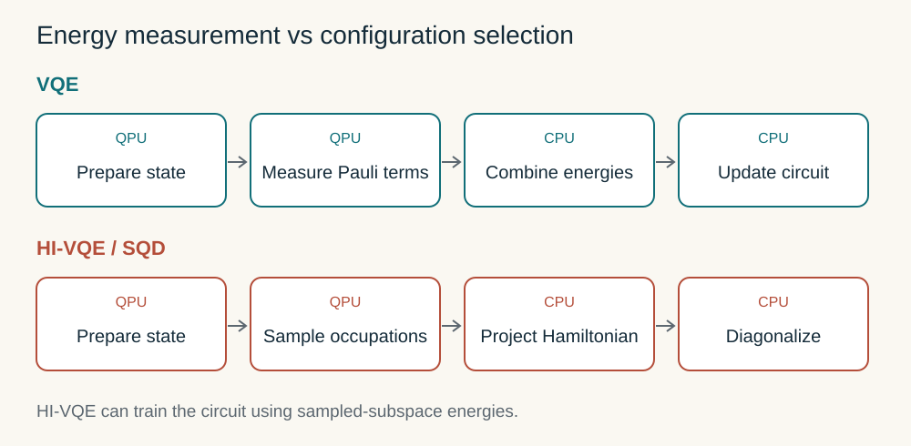

VQE Today and Beyond: Energy Minimization, Subspace Methods, and Digital Validation
From the variational principle to DecaQ’s 400-spin case, HI-VQE and SQD, and the requirements of OLED research
Predicting a molecular energy difference requires both a reliable description of electron correlation and an affordable way to obtain it. A quantum processor offers a different representation of an electronic wavefunction, but preparing that state, reading its energy, and improving it all have costs. The variational quantum eigensolver, or VQE, divides these tasks between parameterized quantum circuits and classical optimization.
This review starts from Alex G. Lee’s DecaQ VQE post. It proposes a known-answer 400-spin problem as a reference workload for developing future fault-tolerant quantum computing workflows. Assessing that proposal requires understanding what VQE computes, why it becomes difficult, and how recent methods change the quantum processor’s job.

Contents
- 1. The variational principle becomes a computational procedure
- 2. Physical approximations enter before the circuit is built
- 3. Short circuits trade coherent depth for repeated energy measurements
- 4. Ansatz, optimization, and noise interact
- 5. What the DecaQ post proposes and reports
- 6. An easy 400-spin problem can reproduce the same headline numbers
- 7. A small model shows when entanglement matters
- 8. Compare improvements by the work they change
- 9. HI-VQE and SQD assign configuration discovery to the processor
- 10. Subspaces and partitions can also change the approximate problem
- 11. OLED research needs more than a ground-state energy
- 12. The choice changes as fault-tolerant hardware improves
- 13. Assessment of the post and useful next tests
- Reading guide and references
The evidence cutoff is October 3, 2026. The public LinkedIn text and DecaQ’s official product scope were inspected. The attached white paper was unreadable in the public session, so its exact Hamiltonian, ansatz, executable code, and runtime were not verified. The 400-spin model developed below is an independently constructed teaching example, not a reproduction of DecaQ’s experiment.
1. The variational principle becomes a computational procedure
For a normalized trial state and a fixed Hamiltonian,
U is a parameterized circuit and θ contains rotation angles or related controls. Hartree–Fock is a common molecular reference state. VQE minimizes energy within the states that its circuit can express. The early demonstration by Peruzzo and colleagues combined a photonic processor with classical optimization for a small HeH⁺ electronic-structure problem.
This is closely related to Rayleigh–Ritz reasoning. Rather than explicitly storing every trial-wavefunction coefficient in classical memory, the circuit prepares a state and repeated measurements estimate selected expectation values. Compact state preparation and efficient optimization are separate requirements. VQE does not guarantee polynomial-time solution of arbitrary many-body ground-state problems.
The exact expectation of a physical noisy state also obeys Tr(ρH) ≥ E₀. A finite-shot estimate can fluctuate below that bound, and some mitigation or extrapolation estimators need not correspond to the expectation of a physical state. A reported energy below a reference therefore does not, by itself, demonstrate a better variational wavefunction.
2. Physical approximations enter before the circuit is built
One convention for a nonrelativistic Born–Oppenheimer electronic Hamiltonian is
Here h and g are one-electron and non-antisymmetrized two-electron integrals in the chosen spin-orbital basis. The basis set, frozen core, and active space must be defined first. Jordan–Wigner or Bravyi–Kitaev transformations then map fermionic operators to Pauli strings. Direct occupation encoding usually assigns one qubit per spin orbital: M spatial orbitals correspond to 2M qubits before reductions such as symmetry tapering.
Agreement with CASCI in a small active space tests accuracy within that space. It does not establish recovery of excluded dynamic correlation, basis convergence, environmental effects, or relativistic physics. Comparisons with DFT likewise require a common observable and a clearly specified physical model. Comparing a whole-molecule DFT energy directly with a truncated VQE active-space energy is not a controlled algorithm comparison.
3. Short circuits trade coherent depth for repeated energy measurements
After mapping, H = ΣₗcₗPₗ and E = Σₗcₗ⟨Pₗ⟩. Expectation values are estimated by repeating state preparation and measurement, either term by term or in compatible groups. For independent term measurements,
Nₗ is the shot allocation and ε the target standard error. The allocation formula assumes known variances, independent measurements, and continuously adjustable shot counts. Grouped measurements introduce covariances. Under otherwise identical conditions, a tenfold improvement in statistical precision therefore costs roughly a hundredfold increase in shots. The number of Pauli terms alone cannot determine that cost.
Huggins and colleagues use tensor factorization and orbital rotations to reduce measurement requirements. Gonthier and colleagues’ resource analysis found that contemporary measurement improvements remained insufficient for practical advantage on their molecular set and assumptions. This is a resource assessment for defined workloads, not a general impossibility theorem for every subsequent method.
End-to-end VQE runtime includes objective evaluations, gradients, shots, resets, state preparation, device latency, and classical processing. A basic parameter-shift derivative typically requires two shifted evaluations per eligible parameter. SPSA can estimate an update direction with two objective evaluations per iteration even for many parameters, but its noise sensitivity and convergence requirements remain part of the total cost.
4. Ansatz, optimization, and noise interact
UCCSD introduces single and double excitations around a reference state. Its chemical interpretation is useful, but circuit depth can grow rapidly. Hardware-efficient circuits can exploit native connectivity and gates; their ability to express and locate the desired symmetry sector must still be demonstrated. Expressibility, gate fidelity, and energy accuracy are different properties.
The original barren-plateau result identifies random-circuit conditions under which gradient signals become exponentially small with system size. It does not say that every VQE has the same problem. Noise-induced barren plateaus add conditions under which increasing noisy depth suppresses training information. Chemical initialization, symmetry preservation, structured circuits, and staged training are possible responses, rather than universal cures.
Quantum natural gradient uses quantum-state geometry to define an update direction. Equal parameter changes need not produce equal changes in the state. Estimating or approximating that geometry costs measurements and numerical regularization, so fewer optimization iterations must be weighed against that overhead. Changing the optimizer cannot automatically restore information that the experiment fails to resolve.
Error mitigation similarly requires a joint assessment of reduced bias and increased variance. Symmetry postselection can discard invalid particle-number outcomes, but discarded shots still cost time. Conserving electron number and S_z does not imply exact S² adaptation. Energy, uncertainty, accepted-shot fraction, and total shots should be reported together.
5. What the DecaQ post proposes and reports
The post presents VQE as a scientific-workflow reference for future FTQC engineering: constructing Hamiltonians, passing parameters, evaluating energies, optimizing, and linking outputs to their source inputs. Other reference families test oracle behavior, adaptive control, phase processing, and optimization. The following values are author-reported, not independently executed in this review.
| Public-post item | Reported value | Interpretation requirement |
|---|---|---|
| Synthetic lattice | 20×20, maximum width 400 | Distinguish model width from physical QPU qubits |
| Variational parameters | 400 | Independence, equivalent angles, and search procedure |
| Coupled spin pairs | 760 | Connectivity, signs, and frustration |
| One- and two-body X/Z terms | 3,840 | Coefficients and full operator structure |
| Known ground-state energy | −780 | No separate physical energy unit in the post |
| Returned energy and error | −780 and 0 | Numerical precision, tolerance, and evaluation convention |
| Optimal-parameter matches | 400/400 | Separation of known-answer data from optimizer inputs |
| Dense global statevector | Reportedly no 2⁴⁰⁰ materialization | Validity and complexity of the alternative representation |
Known-answer workloads are valuable. Sign, register-order, constant-offset, and parameter-binding mistakes can cause a converged optimizer to solve the wrong problem. Source-linked outputs help track such errors. Provenance, however, records what was computed; it does not independently establish correctness or difficult-workload performance.
DecaQ’s official product scope limits capacity to supported profiles and states that operator, precision, and workload limits depend on the algorithm family. Its September 29 company release describes execution on general-purpose classical hardware without physical qubits or a QPU. Its “400 logical qubits” terminology should not be read as an experimental demonstration of 400 error-corrected logical QPU qubits. This review classifies the case as a structured digital computation and workflow exercise on classical hardware. The available evidence does not demonstrate physical-QPU VQE, error correction, or quantum advantage. The engine’s precise classification and arbitrary-circuit coverage cannot be established from the public post alone.
The proposed reference workloads make sense as software tests. BV and DJ check function semantics, IPE checks conditional control, QPE checks phase information and inverse-QFT handling, and QAOA and VQE check the link between objective evaluation and optimization. These can expose concrete mistakes in qubit ordering, phase signs, control branches, and energy offsets. Checking those semantics in a classical engine and verifying physical quantum states or logical gates require different evidence. The proposal can serve part of an FTQC engineering workflow; demonstrating accelerated hardware development would require additional measures such as development time or error-detection yield.
6. An easy 400-spin problem can reproduce the same headline numbers
The following construction demonstrates why width and Pauli-term count do not determine computational difficulty. It is a counterexample to an inference from the public numbers, not a reconstruction or allegation about DecaQ’s undisclosed Hamiltonian.
Choose known angles 0 < αᵢ < π/2 and define Qᵢ = cos(αᵢ)Zᵢ + sin(αᵢ)Xᵢ. On an open square lattice, set
A 20×20 grid has 400 sites and 2×20×19 = 760 nearest-neighbor edges. Each one-body term expands into X and Z; each pair term expands into XX, XZ, ZX, and ZZ. With generic angles, there are 2×400 + 4×760 = 3,840 distinct nonzero Pauli terms.
All Qᵢ commute because they act on different sites. Local basis rotations turn this Hamiltonian into a classical ferromagnetic Ising model. Positive h and J make the all-+1 configuration the unique ground state in that basis:
For independently parameterized product rotations, its energy is
The minimum occurs at θᵢ = αᵢ. The construction has 400 known optimal parameters, 3,840 X/Z Pauli terms, an energy of −780, and no need for a global statevector. One energy evaluation takes O(sites + edges) arithmetic. This does not additionally prove that a particular optimizer converges quickly from every initialization.
For a 2×2 version, this review checked the formula against dense diagonalization of a 16×16 matrix. For 400 spins, it verified the term count and product-state energy. The calculation code is public. These checks validate the teaching example, not DecaQ’s engine or an unknown many-body ground state.
Avoiding a dense statevector is good computational design. Tensor networks, stabilizer methods, local-observable causal cones, and analytic structure can also do so. A quantum-advantage claim additionally requires the applicable input family, representation limits, and matched end-to-end comparisons with strong classical alternatives.
7. A small model shows when entanglement matters
Consider two spins with energies measured in units of coupling J=1 and g≥0:
For generic positive g, the ground state is entangled. Minimizing identical real product rotations gives the optimal product-state energy −1−g² for g≤1 and −2g for g≥1. Define Φ⁺=(|00⟩+|11⟩)/√2 and Ψ⁺=(|01⟩+|10⟩)/√2. The entangled family cos(t)Φ⁺+sin(t)Ψ⁺ has E(t)=−cos(2t)−2g sin(2t) and can reach the exact minimum.

Explore the two-spin energy
Teaching model H=−ZZ−g(XI+IX), J=1. Adjust the field g and angle t of the entangled trial state. Results use analytical formulas without shots or device noise. Defaults g=0.5 and t=0.25 are review examples.
| State / space | E / J | Error vs E₀ |
|---|---|---|
| Exact ground state | — | — |
| Best product state | — | — |
| Current entangled trial state | — | — |
| Subspace |00⟩, |11⟩ | — | — |
The dot marks the current trial state, the curve shows E(t), and the dashed line shows exact E₀. Optimize inserts t*=½ arctan(2g). This is an analytical teaching example, not a QPU execution or vendor benchmark.
Standard VQE needs an ansatz that can represent the relevant entanglement. Subspace methods need the right basis states and a reliable optimization of their coefficients. Retaining only |00⟩ and |11⟩ gives energy −1 in this model, omitting the transverse-field connections to |01⟩ and |10⟩. Increasing shots cannot remove that truncation error while the selected space stays fixed.
8. Compare improvements by the work they change
| Approach | Changes | Potential benefit | Remaining cost |
|---|---|---|---|
| UCCSD, symmetry, chemical initialization | Trial states and starting points | Physical structure guides search | Depth and active-space approximations |
| ADAPT-VQE and qubit-ADAPT families | Incremental operator selection | Fewer unnecessary gates and parameters | Operator-pool screening measurements |
| Factorization, grouping, shot allocation | Energy estimation | Lower measurement burden | Basis rotations and covariance treatment |
| QNG, SPSA, staged optimization | Update procedure | Workload-dependent convergence improvement | Geometry, noise, and initialization |
| Symmetry checks and mitigation | Estimator bias | Reduced device errors | Shot loss and increased variance |
| iQCC, fragmentation, embedding | Operators or problem partition | Redistributed circuit and register demands | Operator growth and boundary correlation |
| QSE and Krylov methods | State subspaces | Corrections and excited states | Matrix measurement and conditioning |
| QSCI, SQD, HI-VQE | Configuration selection and classical diagonalization | Offload quantum energy measurements | Sample quality, subspace size, classical memory |
ADAPT-VQE grows a circuit by selecting operators that offer useful energy reduction. Pool screening contributes to its total cost, so the shortest final circuit is not necessarily the fastest complete workflow. The original molecular results were numerical simulations rather than a universal hardware advantage demonstration.
iQCC repeatedly transforms the Hamiltonian. Reducing wavefunction-circuit demands can increase the number of classically handled operator terms. Classical CPU/GPU emulation and physical QPU execution must remain separate evidence categories. Our earlier OLED iQCC review develops this distinction.
9. HI-VQE and SQD assign configuration discovery to the processor

In conventional VQE, the processor estimates the energy of its prepared state. In QSCI, SQD, and HI-VQE workflows, it samples occupation bitstrings; classical computation builds and diagonalizes a Hamiltonian in the selected determinant space. The diagonalization determines the output wavefunction coefficients.
The bound requires a valid subspace of the same Hamiltonian and sufficiently accurate matrix construction and diagonalization. Noisy samples can yield a poor subspace while preserving this variational principle. The bound alone does not certify closeness to the full ground energy. Determinants are orthogonal, unlike generic QSE states, so the overlap matrix is the identity.
IBM’s current HI-VQE documentation describes iterative subspace construction, screening before and after diagonalization, optional classical expansion, and circuit updates. The circuit is trained to find useful configurations without reproducing every ground-state amplitude. Invalid particle-number or spin-projection samples can be recovered or discarded. Missing configurations and difficult training remain possible.
HI-VQE v2, Table 2 reports NH₃ in 6-31G with 10 electrons, 15 spatial orbitals, and 30 qubits: energy −56.29215769 Ha from 199,809 determinants, against CASCI −56.29239989 Ha from 9,018,009 determinants. Direct subtraction gives 0.24220 mHa error; the determinant ratio is approximately 2.216%. This demonstrates compact-space accuracy for that case, not a corresponding runtime speedup. Accurate energy also does not automatically imply equally accurate dipoles or transition properties.
The large SQD experiment combines Heron QPU samples with Fugaku computation. Total device widths were 58, 45, and 77 for nitrogen and the iron–sulfur clusters. Supplementary Table S1 distinguishes 72 occupation-encoding qubits from 77 including auxiliaries for [4Fe–4S]; the largest circuit contains 3,590 two-qubit gates. The largest classical projections reach 100 million configurations, with 64 Fugaku nodes per batch and 100 batches. Exceeding exact-diagonalization sizes does not establish superiority over every classical approximation.
Appropriate comparisons include HCI, SHCI, CIPSI, DMRG, and suitable coupled-cluster or multireference methods. A useful ablation replaces QPU-selected configurations with strong classical selection while matching target accuracy and total runtime. Subspace convergence, batch variability, shots, and classical memory should be reported alongside energies.
10. Subspaces and partitions can also change the approximate problem
QSE applies operators to a reference state, measures Hamiltonian and overlap matrices, and solves Hc=ESc. It can provide corrections and excited states, but nearly dependent basis vectors can amplify measurement errors. Overlap cutoffs and stability need inspection. Our CASH-QSE review explores a complementary division between classical reference states and quantum corrections.
Sample-Based Krylov Diagonalization combines sampling from time-evolved Krylov states with classical diagonalization. Its polynomial-convergence result depends on Krylov assumptions and ground-state sparsity; it is not unconditional efficiency for arbitrary many-body systems.
The September 29, 2026 Deep QSCI preprint reuses benzene-monomer calculations and reduces the quantum register from 40 to 20 qubits. Its Classiq circuits use noiseless classical simulation. At 4.0 Å with 6-31G**, the model interaction is −0.908 kcal/mol versus −1.139 kcal/mol for the comparison CCSD(T) result. Different Hamiltonian construction and BSSE treatment prevent a controlled accuracy comparison. Neutral-monomer spaces exclude intermonomer charge transfer, and the variational bound applies only to the model Hamiltonian. Such exclusions are especially relevant when considering OLED exciplex and CT states.
11. OLED research needs more than a ground-state energy
OLED targets include S₁, T₁, ΔE_ST, local-excitation and charge-transfer character, SOC, vibronic coupling, and geometry or environmental changes. Ground-state VQE alone does not predict excited-state lifetimes or RISC. Variational quantum deflation penalizes overlaps with previously found states to target excitations. QSE and state-averaged methods are alternatives, with additional measurement and state-selection demands.
For ΔE_ST = E(S₁)−E(T₁), correlated errors matter:
The conventional chemical-accuracy scale of about 1.6 mHa is roughly 0.044 eV. It is not a universal sufficient tolerance for TADF gaps, state ordering, or rates. Separately accepted state-energy errors can add or cancel in a difference. Balanced active spaces, orbitals, symmetry treatment, and state descriptions are necessary.
A reasonable research proposal is to identify a small subset of candidates for which TDDFT/TDA and classical multireference calculations become unreliable, then test the relevant active spaces with VQE or sampled-subspace methods. PhOLED problems additionally require relativistic modeling and SOC matrix elements. Improved isolated-molecule energies should not be directly translated into solid-state emission efficiency or degradation stability. This is a proposed research strategy, not an established OLED quantum-advantage result.
12. The choice changes as fault-tolerant hardware improves
VQE uses comparatively short coherent evolution with repeated measurements. QPE demands more substantial state preparation and controlled evolution but resolves energy coherently. With FTQC, variational or subspace preparation could supply a useful initial state before QPE refines the energy. Relevant resources include eigenstate overlap, spectral gaps, Hamiltonian-simulation cost, and physical error-correction overhead.
VQE can therefore serve as a tool for problem definition, compact state preparation, and identifying correlated sectors, even when a different algorithm performs the final precision calculation. An FTQC reference workload must still be complemented by tests of decoding, logical errors, non-Clifford resources, and real-time control. A classical known-answer workflow exercise does not replace those physical tests.
13. Assessment of the post and useful next tests
The useful proposal is to inspect a complete scientific computation with independently known reference answers. The public post reports width and answer agreement, but it lacks enough accessible detail to assess generic entangled workloads, total computational cost, or independent reproducibility. Obtaining the attached white paper would allow a more specific assessment.
Useful follow-up evidence includes the exact Hamiltonian and coefficients, supported operators and circuits, the ground-state derivation, separation of answer data from optimizer inputs, energy values at arbitrary test parameters, multiple starts and failures, and runtime, memory, and precision. Tests can progress from locally rotated easy models to noncommuting or frustrated systems and chemically correlated active spaces, using exact diagonalization, tensor networks, or selected CI as appropriate references. Source-linked records should accompany those comparisons.
VQE development increasingly redistributes work among circuits, measurements, state search, configuration selection, and classical diagonalization. For materials research, the relevant outcome is whether this division reduces the error in a target property and the complete computational cost. The DecaQ post is a starting point for workflow validation; it does not establish generic 400-qubit quantum computation or physical FTQC.
Reading guide and references
Start with Peruzzo’s original VQE paper and Tilly’s review, then read the measurement-resource analysis. Comparing ADAPT-VQE with HI-VQE and SQD separates circuit compression from changing the quantum measurement task. For excited states and OLED applications, add VQD, QSE, and the modeling boundaries of Deep QSCI.
- Alex G. Lee — public DecaQ VQE post. Public text inspected; attached white paper unread.
- DecaQ official product and supported scope. Company description; accessed 2026-10-03.
- Peruzzo et al., A variational eigenvalue solver on a quantum processor. Nature Communications 5, 4213 (2014), DOI: 10.1038/ncomms5213.
- Tilly et al., The Variational Quantum Eigensolver: a review of methods and best practices. Physics Reports 986 (2022), DOI: 10.1016/j.physrep.2022.08.003.
- Bravyi et al., Tapering off qubits to simulate fermionic Hamiltonians.
- Huggins et al., Efficient and Noise Resilient Measurements for Quantum Chemistry. npj Quantum Information 7, 23 (2021).
- Gonthier et al., Measurements as a roadblock to near-term practical quantum advantage in chemistry. Physical Review Research 4, 033154 (2022).
- McClean et al., Barren plateaus in quantum neural network training landscapes.
- Wang et al., Noise-Induced Barren Plateaus in Variational Quantum Algorithms.
- Stokes et al., Quantum Natural Gradient.
- Grimsley et al., An adaptive variational algorithm for exact molecular simulations.
- Ryabinkin et al., Iterative Qubit Coupled Cluster approach with efficient screening of generators.
- Pellow-Jarman et al., HI-VQE v2. Preprint; methods and NH₃ Table 2 checked.
- IBM Quantum — HI-VQE Chemistry. Official implementation description.
- Robledo-Moreno et al., Chemistry Beyond the Scale of Exact Diagonalization on a Quantum-Centric Supercomputer. Methods and Supplementary Table S1 checked.
- McClean et al., Hybrid Quantum-Classical Hierarchy for Mitigation of Decoherence and Determination of Excited States.
- Yu et al., Quantum-Centric Algorithm for Sample-Based Krylov Diagonalization.
- Tajima, Sato et al., Deep QSCI for the benzene dimer. September 29, 2026 preprint; methods, results, and model limits checked.
- Higgott et al., Variational Quantum Computation of Excited States.
- DecaQ Cloud Beta 2 company release. 2026-09-29; distributed through EIN Presswire. This is a company release, not independent validation or a NASA announcement.
Scientific copyedit: Removed unsupported scale and speedup language and repetitive contrasts. Preserved the post’s numerical claims, active spaces, units, and execution boundaries. The DecaQ white paper and independent engine reproduction remain unverified.